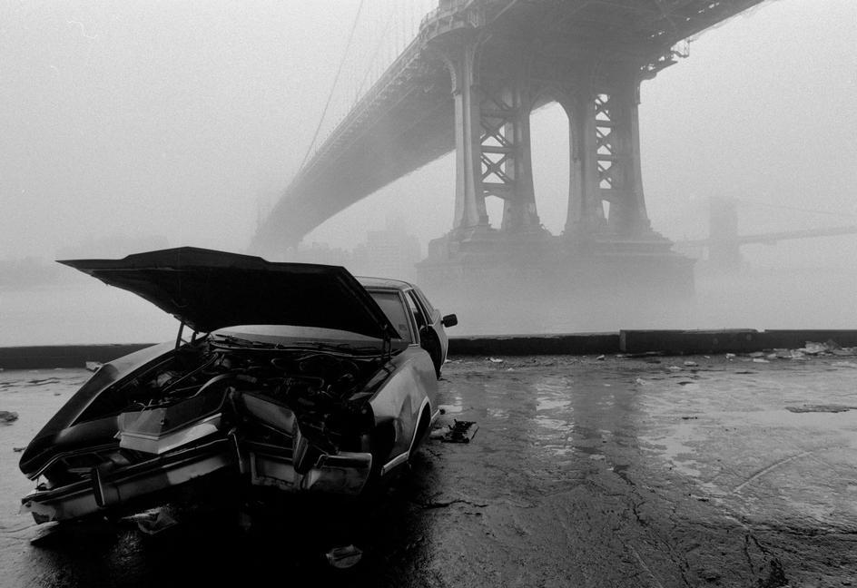
retronewyork :
East River. Manhattan Bridge and Brooklyn Bridge in the fog. 1986
by Ferdinando Scianna
route22ny :
onceuponatown :
New York. BAYONNE AX MURDERER. FRENCH NUDISTS. Coney Island wax Museum, July, 1939.
I think Disneyfication is finally catching up with Coney Island, but the lurid has traditionally been at home there (even in recent years), as well as family amusement and the beach.
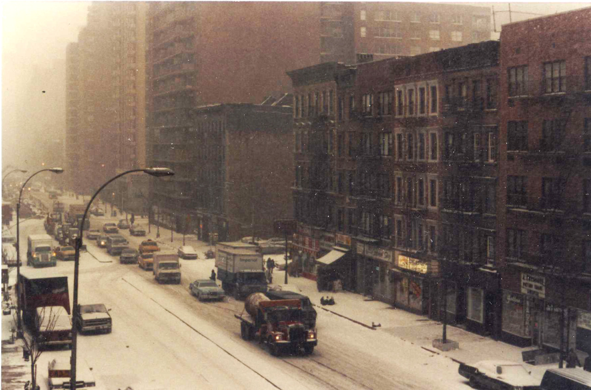
Upper East Side, 1983. (1st Ave near 83rd St)
So glad I found your blog. Thank you for all the amazing posts--made me cry, missing it all.
Thanks, man! Glad to spread the nostalgia!
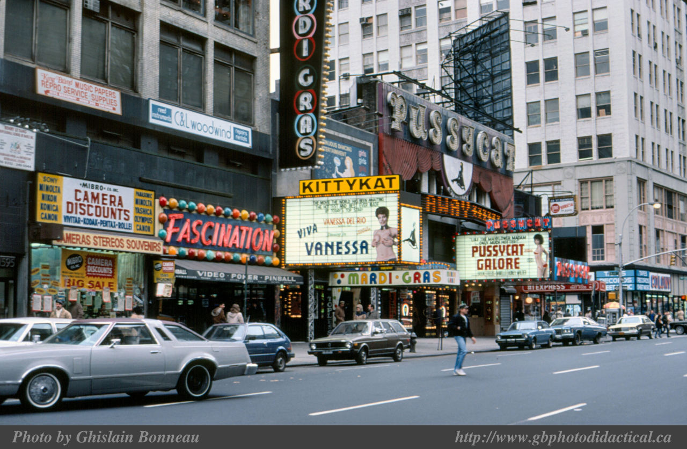
Broadway between 48th and 49th, 1984. Fascination was the best arcade in Times Square. I can’t vouch for the quality of the porn theaters.
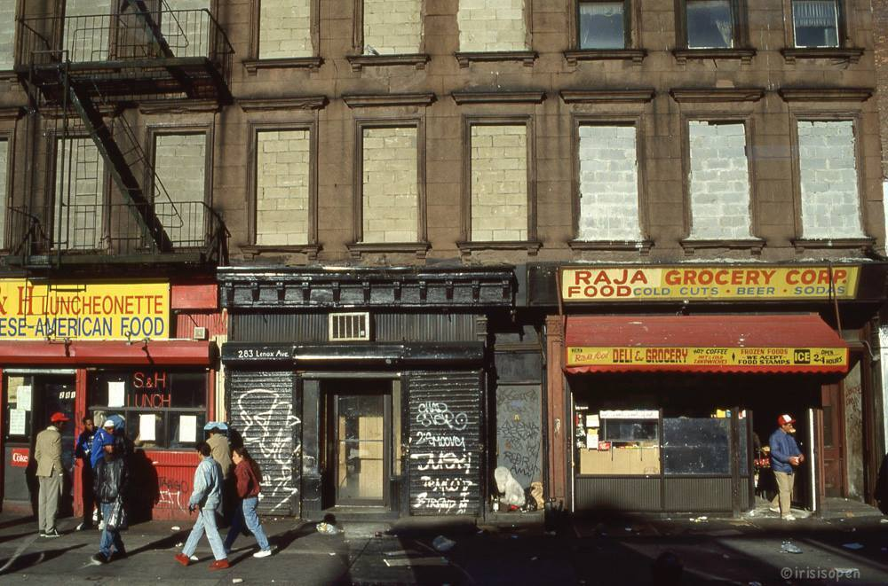
Lenox Ave between 124th and 125th, 1970s
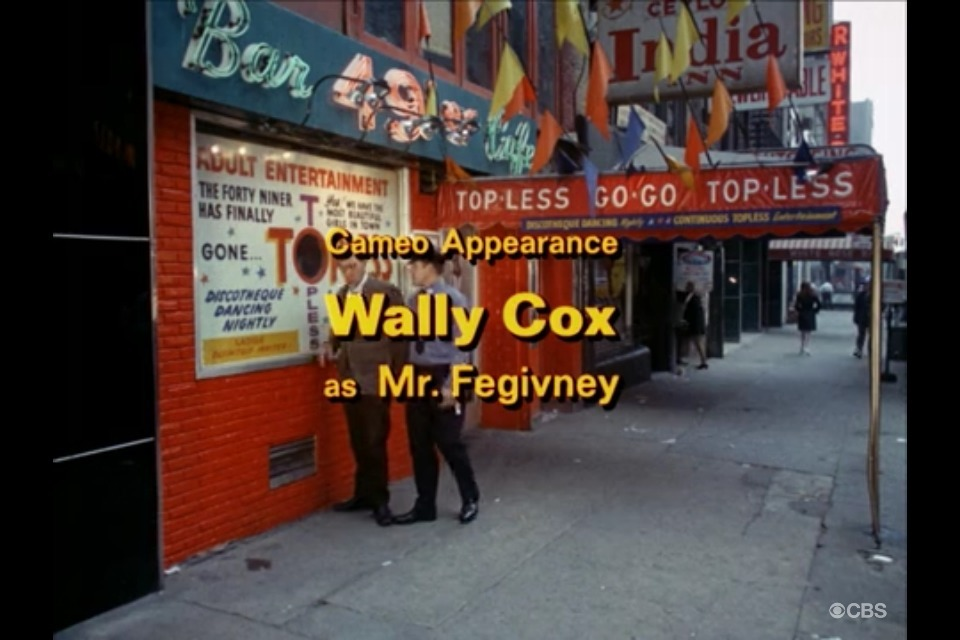
Wally Cox and Topless Go-Go. Tehee.
(Odd Couple credits)
maudelynn :
Atop the Empire State Building on Opening Day c.1931
via imitationistelevision.blogspot.com
Liquor store on 145th Street between Broadway and Amsterdam, 1987
Grand Street at Broadway, 1978
Outside of Brandeis High School, Amsterdam Ave and 84th St, 1977.
My dad used to threaten to send me there, if my grades got too low. A pretty good scare tactic, actually.
The Hot Rod Queen, standing outside the Coliseum at Columbus Circle, 1969.
zafira66 :
NYC Subway System, circa 1904
NYC subway in 1969. No graffiti yet…
VIDEO
Random footage taken at 88th and Broadway, 1971
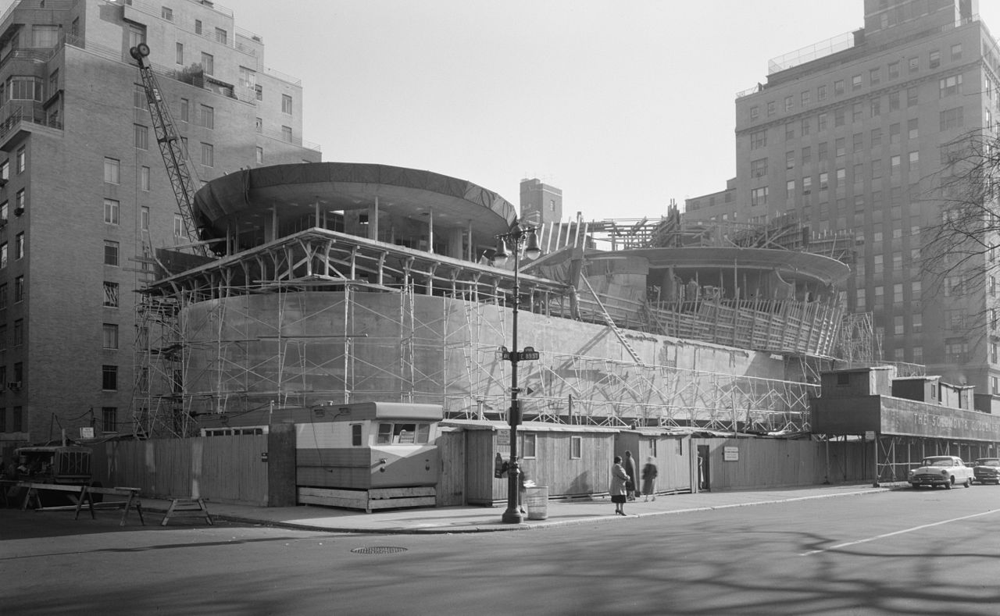
The Guggenheim Museum under construction, 1957
81st and Columbus, facing West, late 1970s
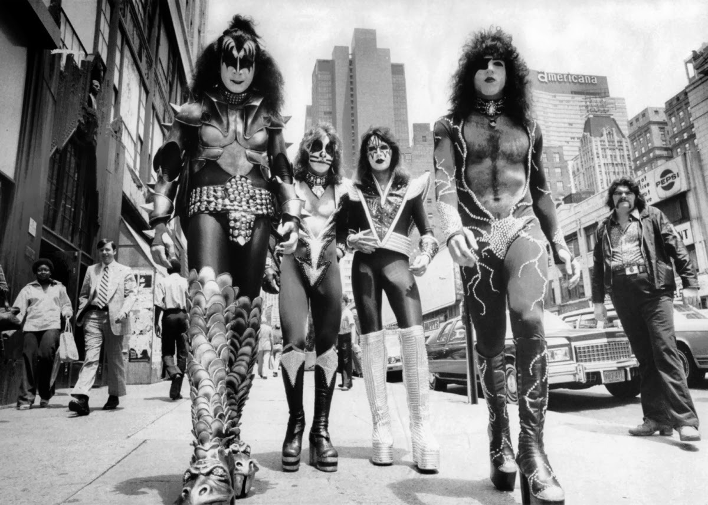
retronewyork :
KISS Walking Streets of New York City June 24th 1976
155th St & Frederick Douglass Blvd, 1970
The theater district in 1978. (44th Street)
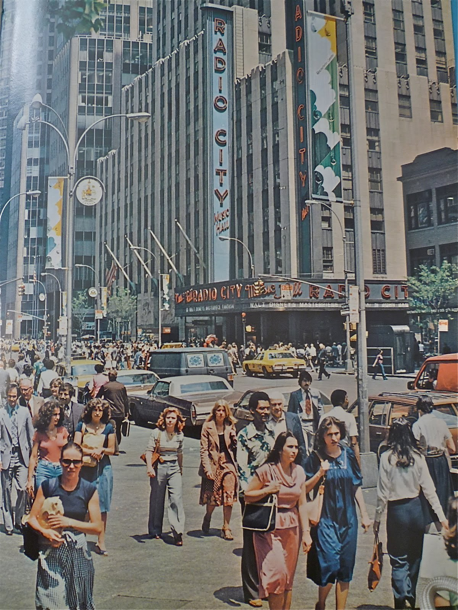
Radio City 1978
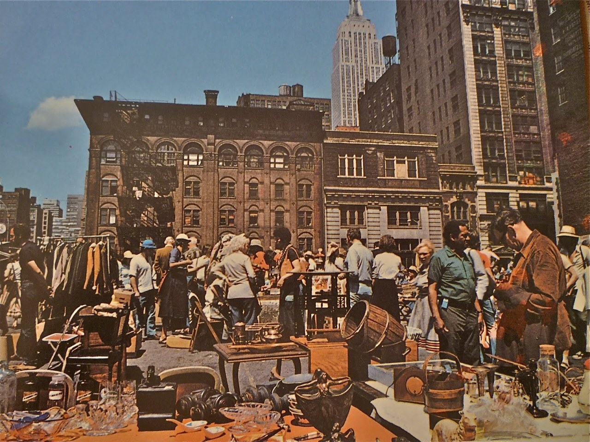
Chelsea flea market, 1978
Blizzard in Brooklyn, Boro Park, New Utrecht Ave. 1978
timessquareblue :
World Theater, 153 West 49th Street
Photo by Mitch O’Connell
“Wake up and put on some goddamn shoes.”
Washington Square Park, 1977.
k-a-t-i-e- :
Commutors travel on the New York subway in the 1980s
Steven Siegel
West 36th Street, 1976
Unhappy old ladies walking down Essex Street, 1975. Maybe if they had a natural fiber or two in their dresses…
retronewyork :
Times Square 1988
by Palle Blak Pedersen
Washington Square 1952
Union Square (16th St) in the 1970s
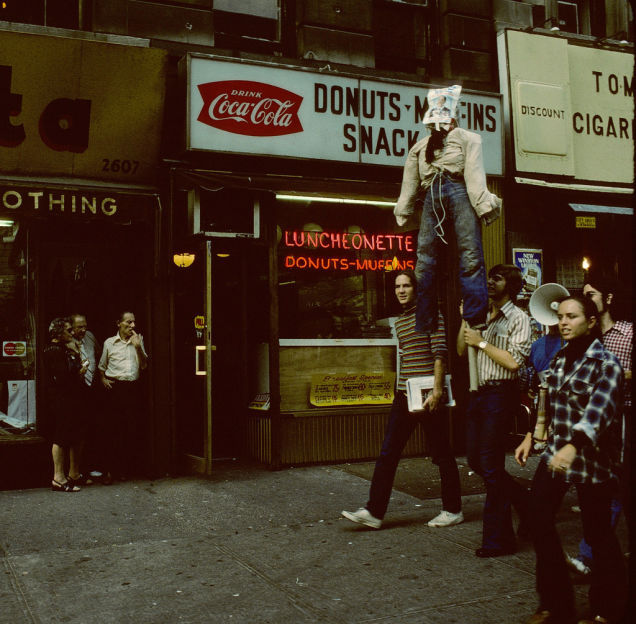
Protesting something in the 1980s. Broadway and 111th St.
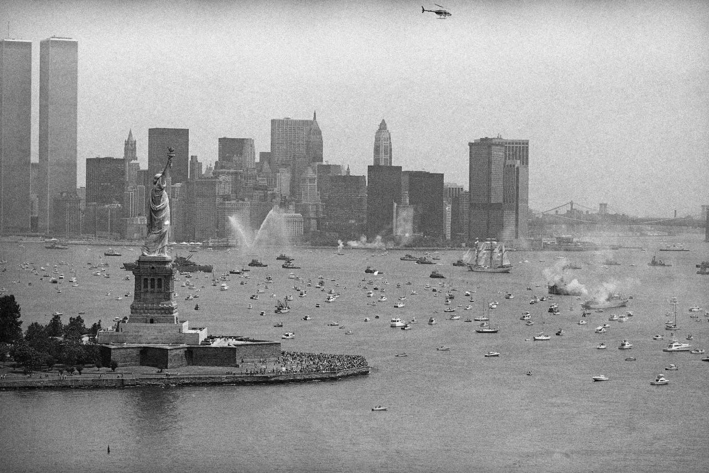
Bicentennial celebration in the harbor, 1976.
5th Street between C and D, early 1980s.
60s70sand80s :
42nd Street subway, 1986 © Matt Weber
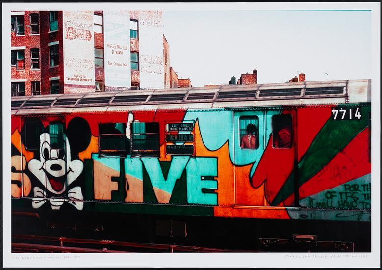
Early Lee piece, 1977
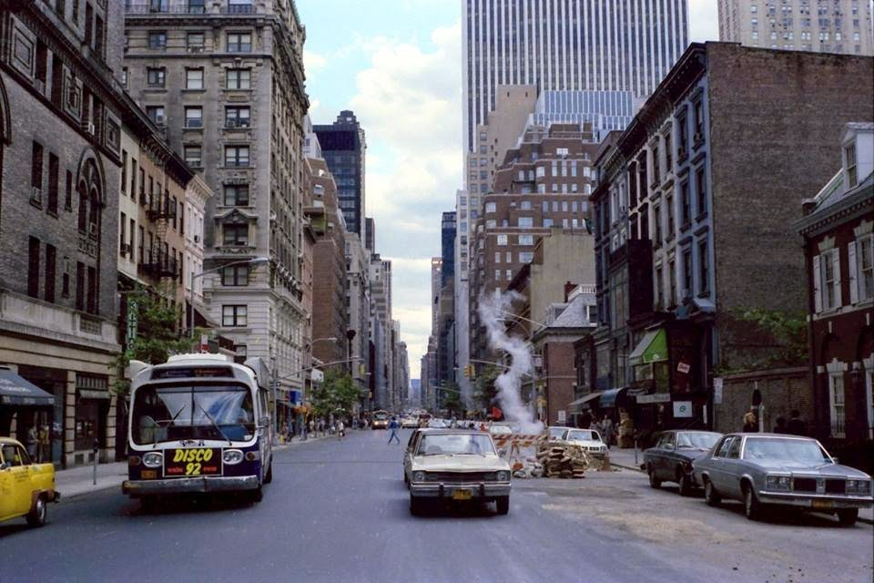
Madison and 64th, 1979
timessquareblue :
Embassy 1 Theater, 1560 Broadway, ca. 1987
Photo by Steve Siegel:
Riding, 1979.
yours is easily the best tumblr on the internet, no question. i notice you have a lot of photos of the upper west side, my old neighborhood. where / how do you find them? keep up the amazing work.
Thanks so much! Most of the photos are just found via good old-fashioned surfing, though I have a couple of special secret sources as well.
Life before iPods
Bleecker and Christopher, 1975
East Brooklyn, 1973.
Broadway near 34th Street around 1970. Gimbels department store on the left, and the McAlpin hotel on the right.
Car 2120, requesting backup…
60s70sand80s :
Greenwich Village, 1979